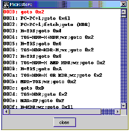

The Microstore View shows the microprogram controling Mic-1 MMV. It is opened by selecting Microcode Store | View Microstore. Microstore highlighting and tracking are enabled or disabled by Preference entries.
